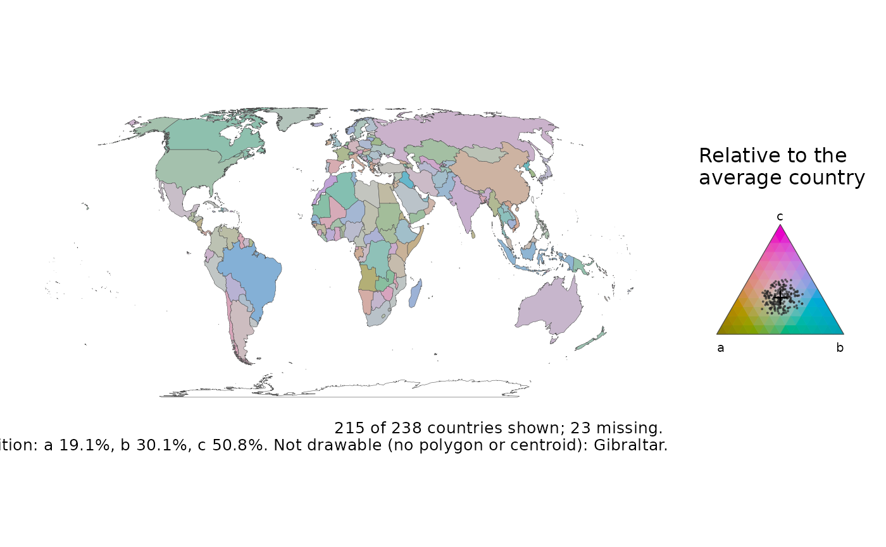

Colours each country by the balance of three parts of a whole: the agriculture, industry and services shares of GDP, or the young, working-age and old shares of a population. Each part has a primary colour, and a country's colour mixes the three in proportion to its shares, so a country dominated by one part takes that part's colour and an even mix is grey (the ternary balance scheme).
Usage
ternary_map(
data,
x,
y,
z,
centre = TRUE,
projection = "equal_earth",
recenter = NULL,
hue = 80,
key = TRUE,
title = NULL,
legend = NULL,
footnote = "auto"
)Arguments
- data
A map-ready frame from
attach_geometry(), on either backend.- x, y, z
The three parts (unquoted), each non-negative. They are closed to shares, so counts and percentages work as well as proportions. A country missing any part, or with all three zero, is drawn as no data.
- centre
TRUE(default) to centre on the average composition, the closed geometric mean over the countries with all three parts above zero; three positive numbers, a composition to centre on, in the orderx,y,z; orFALSEfor the plain scheme, where grey means equal shares.- projection, recenter
As in
world_map().- hue
The hue of
x's colour, in degrees on the HCL wheel;yandztake the hues 120 and 240 degrees on.- key
Draw the colour triangle in the legend area? Needs ggplot2 3.5.0 or later.
- title, legend
Optional plot title and key title.
- footnote
The caption, as in
world_map():"auto"(default) states the coverage, the centre and the source, a string is used as given,FALSEadds nothing.
Value
A ggplot object. map_provenance() records the centre.
Details
Countries' compositions usually sit close together, and on the plain scheme
they come out in near-identical colours. centre = TRUE (the default)
centres the scheme on the average composition (Schoeley 2021): grey is the
average country, and a colour says which part a country has more of than
the average. The key is the colour triangle with every country on it as a
ring, and the caption states the average composition the colours are
relative to.
References
Schoeley, J. (2021). The centered ternary balance scheme: a technique to visualize surfaces of unbalanced three-part compositions. Demographic Research 44(19), 443-458. doi:10.4054/DemRes.2021.44.19
Examples
# \donttest{
# A made-up composition: three parts that add up to each country's total.
snap <- countryatlas::world_snapshot$countries
set.seed(1)
snap$a <- stats::runif(nrow(snap), 1, 4)
snap$b <- stats::runif(nrow(snap), 2, 6)
snap$c <- stats::runif(nrow(snap), 4, 9)
ternary_map(attach_geometry(snap), a, b, c)

# }